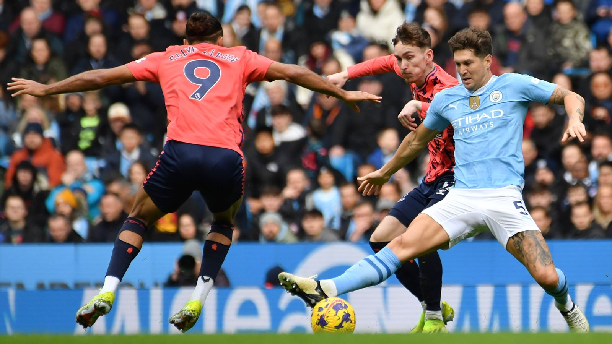

Man City vs Everton: As careless hosts prove sloppy, Pep Guardiola can't afford to sit Kevin De Bruyne again after ultimate assassin Erling Haaland bludgeons his way back into form.
Erling Haaland scores twice to give Man City a 2-0 win over Everton; Pep Guardiola's side briefly moved above Liverpool at the top of the Premier League; 18th-placed Everton now winless in seven games

Erling Haaland's late double sent Manchester City temporarily top of the Premier League as they beat Everton 2-0 to extend their winning run to 10 games in all competitions.
The Norwegian broke the stalemate with a deadly half-volley to score his first goal in two months, and an ice-cool finish melted the Toffees
Despite missing two months of action due to a bone injury, Erling Haaland's scoring prowess and striker instinct are still unmatched as he led a lackluster Manchester City to a 2-0 victory over Everton.
On Friday, Pep Guardiola made the apparent statement that Manchester City has a better chance of winning when Kevin De Bruyne and Haaland are playing, but he took a chance by not starting the Belgian.
Not coincidentally, Everton scored the first goal of the half and City missed a shot on goal for the first time since August 2021.🇳🇴 Erling Haaland vs Everton:
— Matty (@MattyBoi_78) February 10, 2024
100% pass accuracy (11/11)
25 touches
8 touches in opp. box
4 shots
4 duels won
2 successful take-ons
2 chances created
2 shots on target
2 goals#ManCity #Haaland #PremierLeague pic.twitter.com/Jf3dFHnANR
Everton sought to break forward when possible, causing occasional problems for the hosts, with Jack Harrison firing one half-chance over at the far post. For the most part, though, they were focused on protecting their own goal.
There was a string of Everton blocks in the first period, including one by James Tarkowski from a close-range Manuel Akanji effort which had City optimistically appealing for handball.
And the visitors continued to frustrate City after the break, with Guardiola's side mostly reduced to speculative long-range efforts as Julian Alvarez and Rodri fired over the bar.
Kevin De Bruyne has provided 12 assists for Erling Haaland, making him the Premier League player with the most assists for a specific teammate in all competitions since the beginning of last season.
Erling Haaland ended his goal drought by scoring the opening goal, breaking a streak of 17 shots and 418 minutes without scoring a Premier League goal. He has now scored in all three of his league matches against Everton, totaling four goals.
In his last 23 appearances for Manchester City across all competitions, Kevin De Bruyne has been directly involved in 23 goals, scoring six and assisting 17. He has either scored or assisted in six of his eight games this season.
Manchester City managed to score with their first shot on target in the 71st minute of this match. This marks their longest wait for an attempt on target in a Premier League game since September 2021 against Southampton, where they waited until the 90th minute.
Everton's winless streak in the Premier League now extends to seven games, with three draws and four losses. Prior to this run, they had won four consecutive games. Additionally, Everton has failed to score in more top-flight matches than any other team this season, with 10 such matches.